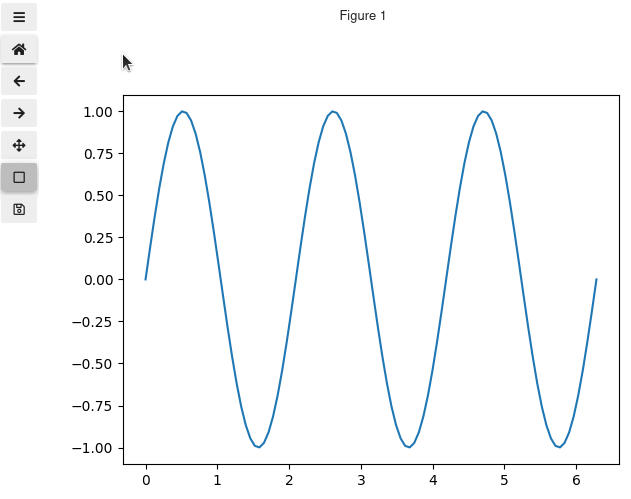

ipympl
Contents
ipympl#
ipympl enables using the interactive features of matplotlib in Jupyter Notebooks, Jupyter Lab, Google Colab, VSCode notebooks.
Matplotlib requires a live Python kernel to have interactive plots so by default the outputs on this page will not be interactive. To try things out yourself you can either use  or make these docs interactive by clicking on the rocket icon in the top right of the page.
or make these docs interactive by clicking on the rocket icon in the top right of the page.
Installation#
The quickest way to install is either:
pip install ipympl
or conda install -c conda-forge ipympl
For more detailed instructions see Installing.
Basic Example#
To activate the ipympl backend all you need to do is include the %matplotlib ipympl magic in the notebook. Alternatively you can use %matplotlib widget which will have the same effect.
%matplotlib ipympl
import matplotlib.pyplot as plt
import numpy as np
fig, ax = plt.subplots()
x = np.linspace(0, 2*np.pi, 100)
y = np.sin(3*x)
ax.plot(x, y)
With a working Kernel that simple example will give a plot with interactivity enabled in the notebook! 
Install#
pip install ipympl